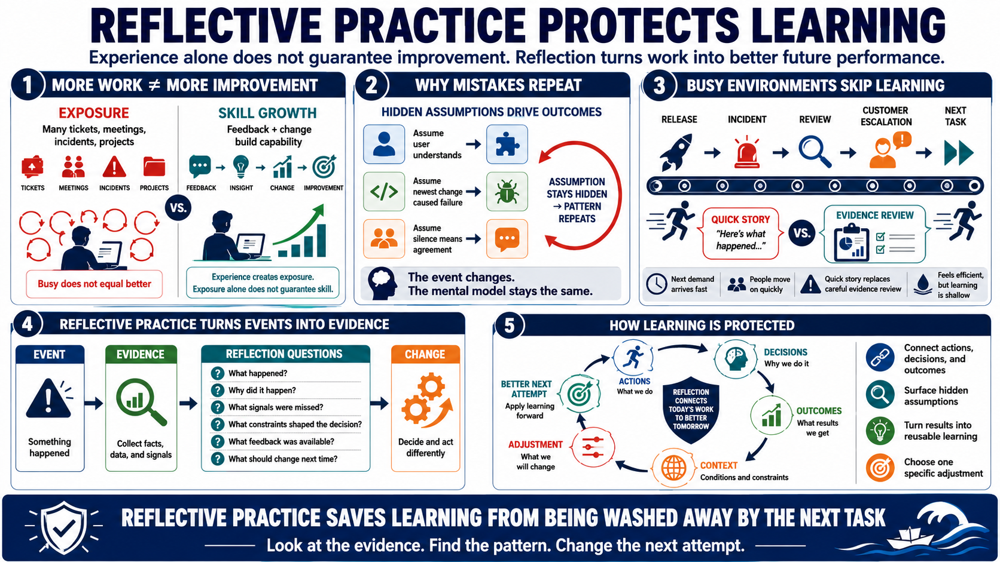

Experience Does Not Automatically Become Learning
Connecting to LMS... Progress: in progress

Narration
Doing more work does not automatically produce improvement. A person can handle many tickets, attend many meetings, resolve many incidents, or complete many projects and still repeat the same mistakes. Learning requires feedback, attention, comparison, correction, and changed behavior. Experience creates exposure, but exposure alone does not guarantee skill.
Repeated mistakes often persist because assumptions are not examined. A team may assume a user understands a workflow, a developer may assume a failure is caused by the newest change, or a leader may assume silence means agreement. If those assumptions are never surfaced, the same pattern returns. The event changes, but the mental model remains the same.
Busy environments often skip learning because the next demand arrives before the current one has been understood. After a release, incident, review, or customer escalation, people move on quickly. That feels efficient in the moment, but it can create false confidence or shallow conclusions. A quick story about what happened may replace a careful look at the evidence.
Reflective practice turns events into evidence. It connects actions, decisions, outcomes, context, and future changes. Instead of asking only whether something went well or badly, it asks why the result happened, what signals were missed, what constraints shaped the decision, what feedback was available, and what specific adjustment would make the next attempt stronger. This is how a busy person protects learning from being washed away by the next task.